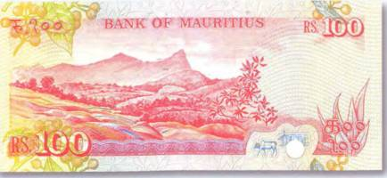
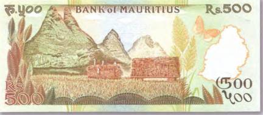
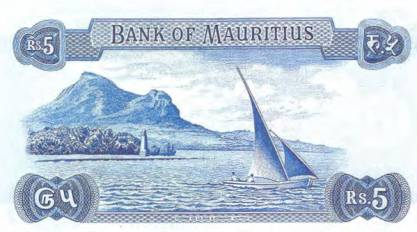
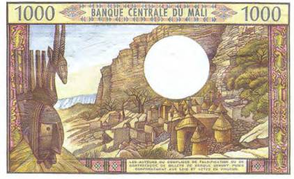
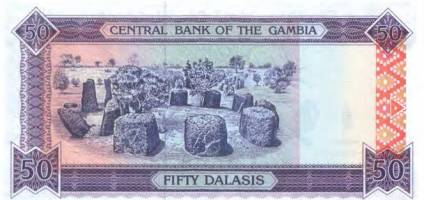
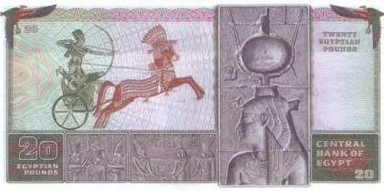

Тайны бумажных денег : Мир тайн и загадок

Омываемый волнами Индийского океана Маврикий можно сравнить с чудесным островом из русской сказки «Аленький цветочек». Как в волшебной сказке, на нем произрастают удивительные растения, порхают необыкновенной красоты бабочки и чудные птицы. И множество диковинных зверей чувствует себя там как дома. Высочайшей точкой острова является гора Питон-де-ля-Петит Ривьер-Нуар. Ее высота равняется 835 м над уровнем моря. Гора возвышается на востоке обширной равнины Шампань. Изображение этой вершины можно наблюдать на оборотной стороне боны в 100 рупий 1986 г. (рис. 229).

На Маврикии до сих пор бытуют легенды о пиратском прошлом острова. О тех морских разбойниках, которые приплывали сюда, чтобы зарыть на острове награбленные на бескрайних морских просторах сокровища. Кстати, корсары в свое время действительно использовали Маврикий в качестве перевалочного пункта. Здесь им не нужно было бояться служителей закона. Достаточно вспомнить знаменитого флибустьера Роберта Сюркуфа, который со временем может превратиться в национального героя острова. Что же касается гор, овеянных легендами, то кто знает, может быть, в глубинах их удивительных формаций и вправду захоронены несметные богатства. Причудливые силуэты гор Маврикия помещены на боне в 500 рупий, которая находилась в обращении с 1988 г. (рис. 230).

Многие жители Маврикия убеждены, что где-то на их острове захоронены пиратские клады с несметными богатствами. Мало того, один из ярых кладоискателей острова некто Филипп Шеро де Монтелю утверждает, что даже знает наверняка, где они спрятаны. Поискам одного такого легендарного клада Филипп посвятил всю жизнь и потратил на это почти все свои деньги. Но пока его усилия оказались напрасными. Сокровищ он так и не нашел. Впрочем, несмотря на свой преклонный возраст, Филипп продолжает поиски. Ибо он уверен, что в давние времена у берегов Маврикия пираты взяли на абордаж английское судно, на борту которого были фантастические сокровища. В трюмах корабля англичане перевозили бриллианты и 750 тыс. золотых дублонов. Камни и золото флибустьеры укрыли в пещере. По версии Филиппа, она может находиться где-то у самой воды, скрытая от посторонних глаз в прибрежных скалах. И кто знает, может быть, рассматривая оборотную сторону боны в 5 рупий 1967 г., мы невольно скользим взглядом по тому самому месту, где когда-то был зарыт и по-прежнему покоится пиратский клад (рис. 231).

По легенде, корсары, как им и полагалось, оставили на пути к сокровищам свои специфические метки. Это и огромная каменная глыба, напоминающая по форме черепаху. И старинный сапог, служивший указателем направления. И наконец, таинственная скала на берегу моря, в которой, если всматриваться в нее под определенным углом, можно увидеть контуры лиц сразу двух человек. У одного из них — заостренный нос, а у другого на голове угадывается шляпа. Если верить Филиппу де Монтелю, в той скале запечатлены профили обоих капитанов — убитого англичанина и более удачливого корсара. Все три пиратские метки неутомимый кладоискатель нашел сам, без посторонней помощи. Остается лишь надеяться, что и с легендарным кладом ему когда-нибудь улыбнется удача.
На боне Мали в 1000 франков 1970–1984 гг. запечатлены уступы плато Бандиагара, с облепившими его склоны хижинами догонов (рис. 232).

Догоны — одна из самых таинственных народностей Черного континента, численность которой составляет не более 300 тыс. человек. Изучению традиций догонов, их обрядов и невероятных астрономических знаний посвятил свою жизнь Марсель Гриоль. Его можно назвать первооткрывателем догонов, и ему мы обязаны удивительными сведениями о быте и религиозных верованиях этого народа. Жизнь догонов неотрывно связана с колдовством, ясновидением и почитанием культа мертвых. Когда в селении умирает человек, на его семью налагается множество запретов. Срок действия табу зависит от статуса, который занимал покойник при жизни. В жизни догонов важна любая деталь, и буквально все имеет глубокий смысл. К примеру, в архитектуре их сложенных из камней зернохранилищ угадываются отголоски мифа о Великом Начале. Четыре поддерживающие крышу подпорки по углам строения означают поднятые вверх руки и ноги лежащей на спине женщины. Это символ солнца. Ее члены поддерживают крышу — символ неба. А расположенная с северной стороны дверь зернохранилища символизирует ее половой орган. Развалины подобных строений видны и на представленной здесь боне.

Загадочным древним культам посвящена и банкнота Гамбии в 50 даласи 1995 г. (рис. 233).
Это мегалитическое сооружение напоминает Стоунхендж на юге Англии. По-прежнему не выяснено, с какой целью такие гранитные монолиты возводились по всему миру. По одной из наиболее популярных и ходовых теорий, это древнейшие обсерватории. Приверженцы другой версии утверждают, что это остатки древнейших культовых комплексов.
Несмотря на определенную схематичность в изображении людей, древние египтяне всегда старались подчеркнуть особенности женской красоты, словно хотели донести до нас неподдельную гордость за своих красавиц. Глубокий задумчивый взгляд, изящный поворот шеи, мудреные прически — все это можно разглядеть на бесчисленных фресках и барельефах, оставленных художниками прошлого. Иной раз возникает ощущение, что увековеченные в камне богини, царицы или принцессы только того и ждут, чтобы созерцатель заговорил с ними. Женщины Древнего Египта знали толк в искусстве очарования. Они и сегодня ни за что не откажутся от возможности обратить на себя внимание мужского населения планеты. Даже если это всего лишь наигранно надменный взгляд из-за музейного стекла. Посмотрите на оборотную сторону египетской боны в 20 фунтов 1978 г., где демонстрируется барельефный портрет Клеопатры VII (по другим данным, богини Исиды), и убедитесь в этом лично (рис. 234).

Это та самая Клеопатра — царица Египта, которая успела побывать замужем сразу за двумя историческими знаменитостями. Первый из них — Гай Юлий Цезарь, от которого Клеопатра имела сына. А после смерти Цезаря, в 37 г. до н. э., она стала супругой не менее известного Марка Антония.